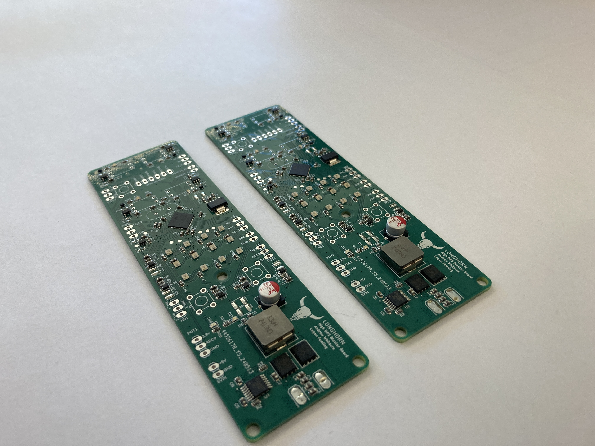

|
ME 507 Term Project
|
Loading...
Searching...
No Matches
|
ME 507 Term Project
|
The electronics of the blaster are built around custom-designed PCBs, which control the firing mechanism and other functionalities.
 This first board that was designed was not ultimately used for several issues regarding component failure and a combination of both known and unknown issues. We were able to replace this board with a STM32 BlackPill development board for a functional product.
 This board was used the 24V Solenoid Driver Board. Power is delivered from the batteries towards the top of the board, and the solenoid wires are connected towards the bottom of the image. The board also distributes 24V to the ESCs. The blue, green, and yellow wires are the signals used to control the H-bridges. This board worked exceptionally well for the application and allowed us to drive the solenoids at an extremely fast rate of fire. This is done through “Solenoid Clamping” which rapidly decays the current generated by the solenoid when returning using the spring. This allows the solenoid to return much quicker than if the current was just freewheeling through a diode.
This board was used the 24V Solenoid Driver Board. Power is delivered from the batteries towards the top of the board, and the solenoid wires are connected towards the bottom of the image. The board also distributes 24V to the ESCs. The blue, green, and yellow wires are the signals used to control the H-bridges. This board worked exceptionally well for the application and allowed us to drive the solenoids at an extremely fast rate of fire. This is done through “Solenoid Clamping” which rapidly decays the current generated by the solenoid when returning using the spring. This allows the solenoid to return much quicker than if the current was just freewheeling through a diode.